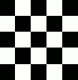

Warp Transform is a GEGL based brush-like tool which works directly on the image. You can use an erase mode to partially remove warping you applied. You have available options to adapt strength and size of warping.
There are different possibilities to activate the tool:
-
From the main menu: → → .
-
By clicking the tool icon in the Toolbox.
-
By pressing the W keyboard shortcut.
Normally, tool options are displayed in a window attached under the Toolbox as soon as you activate a tool. If they are not, you can access them from the main menu through → → which opens the option window of the selected tool. The available tool options can also be accessed by double clicking the corresponding tool icon in the Toolbox.
- Move pixels
-
“Move pixels” is the first item of a drop-down list which contains various warping methods:
-
Move pixels is the default method.
-
Grow area
-
Shrink area
Figure 14.132. Shrink example
Clicking 5 times at the center of the image with brush size = image size.
-
Swirl clockwise/counter-clockwise
Figure 14.133. Swirl example

Swirling clockwise the whole image (brush size = image size) with a circular movement of the brush.
-
Erase warping allows you to undo previously made warp strokes.
-
Smooth warping allows you to smooth previously made warp strokes.
-
- Size
-
The size of the brush.
- Hardness, Strength
-
These control how much of the pixels of the starting location of the warp are moved to the displacement location.
- Spacing
-
This controls the amount of movement when stroking.
- Interpolation
-
![[Note]](images/note.png)
Note An interpolation method is used during warping. See Interpolation for a description of these methods.
- Abyss policy
-
“Abyss” is a term used by GIMP developers for “data outside the input buffer”. The warp tool moves pixels from one point to another. Some pixels may come from outside the layer boundary. These pixels don't actually exist anywhere, and therefore don't have any associated color; yet, some color must be assigned to them.
“Abyss policy” has a drop-down list that allows you to fill empty areas in different manners:
-
None: this is the default option. Empty areas are transparent. An alpha layer is necessary for this option.
-
Clamp: each edge of the transformed layer stretches out indefinitely, so, for example, a pixel to the left of the layer boundary has the same color as the leftmost pixel of the layer with the same y coordinate. An alternative way to think of it is that each pixel outside the layer boundary has the same color as the closest pixel inside the layer boundary.
-
Loop: the transformed layer repeats itself in all directions, so that, for example, falling off the right edge of the layer takes you back to the left edge.
-
- High quality preview
-
“preview” is the image window, where you work, before pressing Enter to validate the transformation. With this option checked, preview is more accurate, but slower.
- Real-time preview
-
When enabled, updates the preview immediately in real-time while warping, which can be slow. When disabled, there can be a slight delay in updating the preview.
- Stroke
-
-
During motion: applies the warp stroke while the brush is moving.
-
Periodically: applies the warp stroke periodically. When this is enabled, a Rate slider appears where you can adjust how often it is applied.
-
- Animate
-
This option allows you to create an animation by generating several intermediate images between the original image and the final transformation.
Frames: this determines the number of frames in the animation.
button: press this to create the animation in a new image window. You can export this to image formats that support animation, e.g. as a GIF image and then enabling the As animation option in the export dialog; or by exporting as webp image and enabling the Save animation option.
Note that you can only create an animation when the warp transform has not yet been finalized.